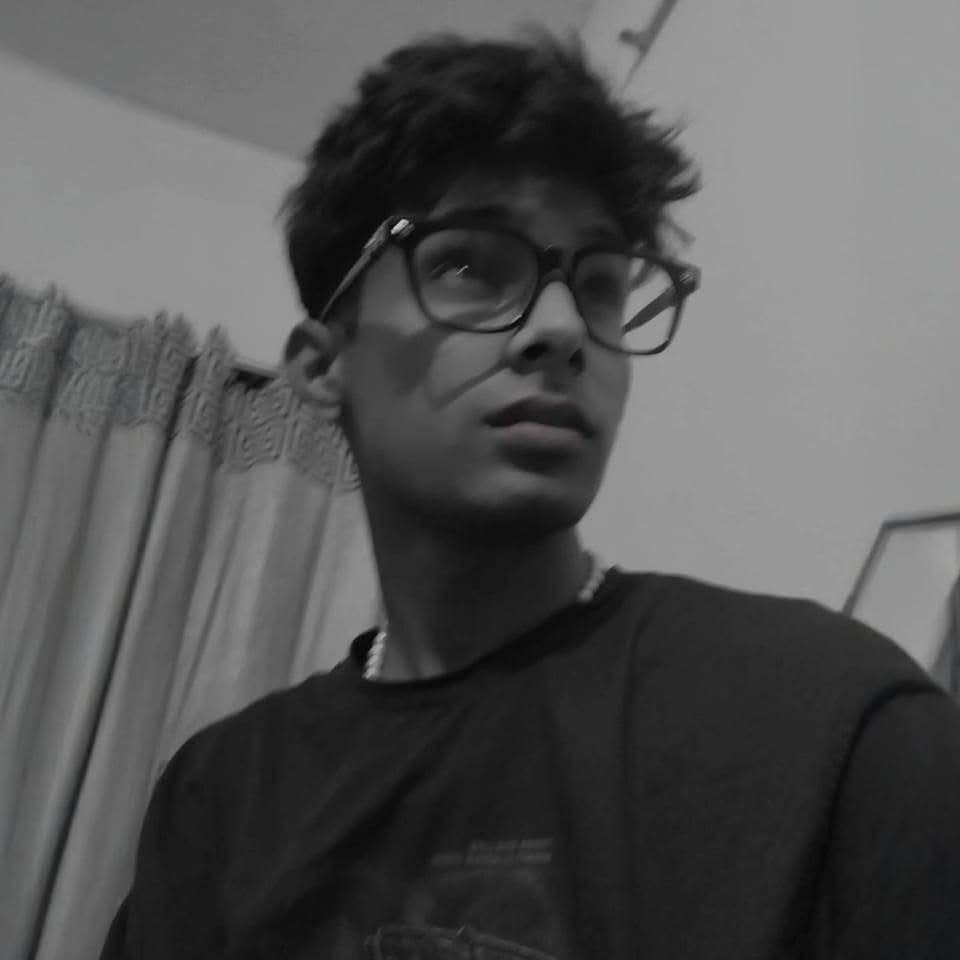

Humanities Student • Writer • Observer

Hello, I’m Tasibul Hasan, a 12th-grade Humanities student at Milestone College. My journey has been shaped by a blend of creative and solitary pursuits. I spent about two years as a backend script writer in the Bangladeshi media and drama industry. After a brief pause, I’m deeply grateful to have resumed this creative work in 2026.
I find peace in solitude: wandering on my own, immersing myself in music and capturing fleeting moments through photography. I also hold a genuine interest in politics and philosophy.
Beyond my creative endeavors, I carry a deeply rooted dream to one day serve as the Prime Minister of Bangladesh. My hope is to lift our nation far above where it stands today and give the people of Bangladesh a prosperous future. Thank you for visiting my page.
An evolving ecosystem of creative and conceptual ventures. It reflects my vision to blend digital aesthetics, thoughtful media production and premium lifestyle essentials into one artistic space.
Original thoughts and social observations from my personal space.
“Don’t rely on others’ advice. It’s meant to help you progress, but not surpass them. Toppers don’t share notes with equals, only those behind. They study together to solve tough problems, then grind harder alone. Life’s a race; keep running your own path till the end.”
“English hides our ignorance. In Bangladesh, fluent English wows people. Even if you know little, present in English & get applause. 95% fear English. Master it, rule them!”
“Benefits of being in a legal profession are that people don’t mess with you easily. People will presume that you are a bad person. They don’t dare to commit fraud with you.”
“More children, larger lineage, greater power in society. Powerful people have many kids, reject family planning. To dominate with family, embrace this. Shed modern notions, they’re used by the powerful to mislead us.”
“For ruling the society, we do not need to become a knowledgeable person. We need to be just smart. Knowledgeable people cannot achieve anything in their lives, but smart people can achieve everything in their lives.”
“If you see no flaws in someone, you don’t truly know them. Everyone has shortcomings; no one is perfect. Humans are here to minimize sin, seek repentance, and earn God’s forgiveness before leaving this world.”
Swipe or drag to explore my photography.